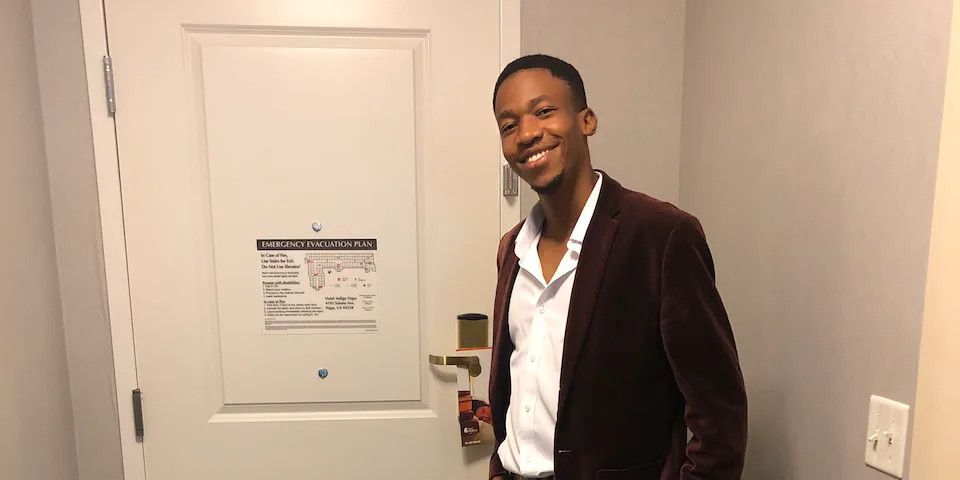

Live → Blog
November 24, 2020

In the first article of this series on unlearning toxic masculinity, I shared briefly on how I became aware of the toxicity of my masculinity only in recent years. It baffles me how I could be oblivious to my toxic masculinity, while I have spent most of my life trying not to be like the toxic males I saw around me. But if you look closely, it makes sense why I missed it. My toxicity stems directly from that active desire to be different from the model of masculinity that I saw most frequently when growing up. I realize so far in this series I have not defined what I mean by toxic masculinity. It is such a loaded term that I think it is important to define how I am using it. To me, toxic masculinity is any behaviors by male individuals that are motivated by a desire to conform (or not) to societal prescriptions of what it means to be a man, that often result in violence against and oppression of other individuals, especially individuals belonging to historically marginalized gender groups such as women. For an alternative definition, you might find this article helpful.
The toxicity I witnessed as a young boy in the world around me was mostly of males trying to conform to societal prescriptions of what it means to be a man. Aggression, physical violence, and the muting of emotions are just some of the examples. Something in little me - perhaps the fact that I was raised by a council of women who have had to play both duties prescribed for men and for women out of necessity - felt that this was deeply unjust. How could it be that women did so much more compared to the men, but yet the men were treated like the gods of the skies and the earth? So I rejected this model of masculinity for myself - well if we ignore the little bit of fighting I did in primary school. I denounced anything that resembled overt male violence. I refrained from playing football - soccer for my American friends - because I did not want to be associated with such vile behavior as cat-calling girls as they passed by. But in this rejection of masculinity, I nurtured a different kind of toxicity - a silencing of my truths that misguided and ultimately proved violent against the women in my life.
Two important interactions over the past few months awakened me to this truth. The first interaction was a new friendship in which I felt emotionally safe. I have been blessed with the privilege to have quite a few friends with whom I feel emotionally safe. But that emotional safety has often been built over time. So here I was in a new friendship and already feeling safe. The freedom to share my truths, including about things that are not so colorful, felt so good. It felt so good that when my therapist invited me to reflect on behaviors that might have helped me survive rough patches in the past but were not necessarily conducive for me to thrive in my adulthood, I knew hiding my truth was one that had to go. I wanted to cultivate emotional safety in my relationships. The second interaction was an unfortunate loss of a few friendships over a mismatch of expectations. One of the contributing factors to that expectations mismatch was that I kept some of my truths to myself in those friendships, and did not correct false assumptions that might have been made.
Both of those interactions affirmed the importance of living truthfully. It is not enough to know my truth, I have to ensure that the people I have relationships with - especially relationships that are considered close - also know my truth. In part for the selfish reason that when I share my truth with my friends and family, I feel seen and nothing beats being witnessed. But also because it is a lot of work to reconcile misconceptions and truths. It would be irresponsible for me to continue living untruthfully - even if it is lying by omission. As I continue my journey to unlearn toxic masculinity, one area I can start at is to live truthfully more broadly.
I ought to stop hiding material truths from others, such as the fact that despite my engagement in christian rituals, especially music, as a means of connecting to the memories of my departed relatives who were christian, I, myself, am not one. I believe in and subscribe to the spiritual practices of my ancestors, which thanks to the violence of the colonialism project was dismissed as evil and devil worship. One of my acquaintances, Sena Voncujovi, has an article that beautifully recounts how the various African spiritual practices became demonized. I will not hide the fact that while there are some behaviors that society prescribes for men that I reject, there are some that resonate with my truth. As I continue to unlearn, it is clear that a large part of this will be to interrogate and define the difference between those behaviors that I will reject and those that resonate with my truth.
That is the latest insight on my own journey. If I completely reject (or completely accept) society's prescribed male behaviors, I will be outsourcing my thinking. My friend Avthar has a good article why people should not outsource their thinking. If you draw any inspiration from my journey, I hope you do not outsource your thinking to my article. For me one of the remedies is to live more truthfully, but that might not be the case for you. By silencing my truth in order to rebel against societal prescriptions of what it means to be a man, I was doing an injustice to myself and to the people around me. The journey is far from over, but I am proud of the man I am choosing to be. I am embracing my truths, including my masculinity.
← Return to Blog